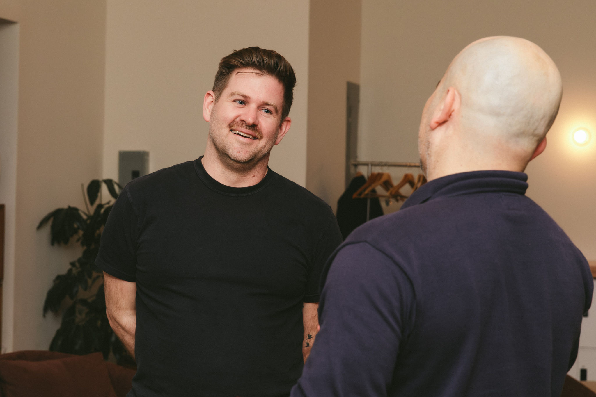

Deliberate Works is led by Sam Spurlin, an organization designer with over a decade of experience helping executive teams change how their organizations actually operate. He has led transformation work for global companies and coached senior leaders through complex structural and strategic challenges. That experience revealed a recurring pattern: even the best external interventions rarely stick, because the organization never develops the internal muscle to continue the work.
That insight is the foundation of Deliberate Works. Sam's approach centers on transferring the capability to evolve—not just delivering recommendations, but building the sensing, designing, and iterating skills inside the organization itself. His background in positive psychology and systems thinking informs a practice oriented toward making organizations more adaptive, more humane, and less dependent on outside help to navigate complexity.